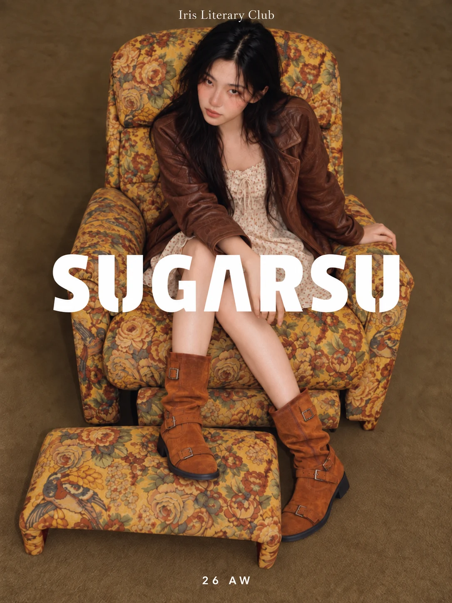
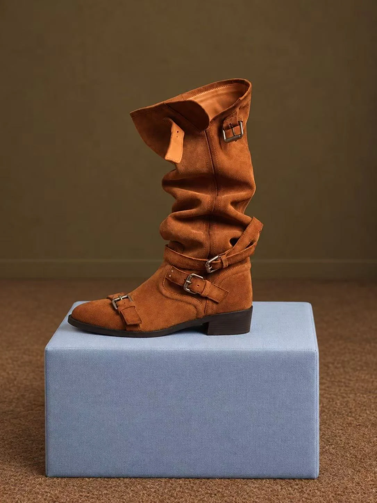
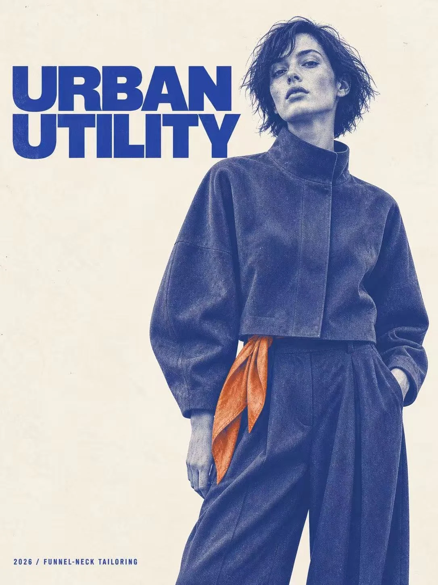

时装与影像
层叠成诗
为时装品牌而作的海报，表现女装的面料质感和叠穿层次。

蔚蓝休息室
蓝色衣服、绿色椅子和浅色窗帘，在三张画面里反复出现。


自在有型
一张时装海报，把蓝色服装局部和网点肌理放在一起。

鸢尾文学俱乐部
SUGARSU 酥履 2026 秋冬季提案中的一组图：一张人物坐像，一张靴子静物。




都市机能
蓝色网点加一点橙色，把一组时装造型收进一张海报。


为时装品牌而作的海报，表现女装的面料质感和叠穿层次。
蓝色衣服、绿色椅子和浅色窗帘，在三张画面里反复出现。
一张时装海报，把蓝色服装局部和网点肌理放在一起。
SUGARSU 酥履 2026 秋冬季提案中的一组图：一张人物坐像，一张靴子静物。


蓝色网点加一点橙色，把一组时装造型收进一张海报。
